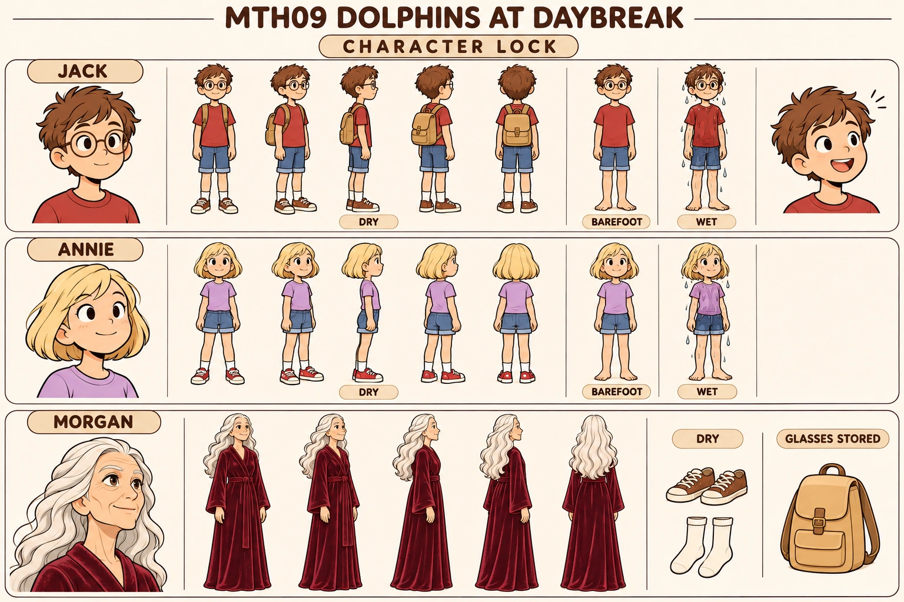
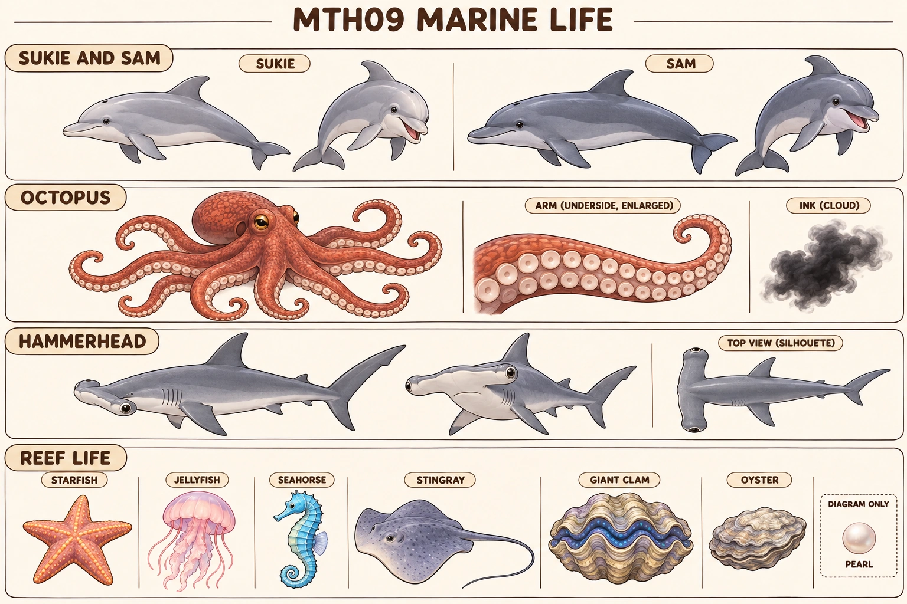

Dolphins at Daybreak
이미지 일관성 소스
본문 삽화 생성 전에 해당 챕터 원문, 아래 상태표, 실제 시트 이미지를 함께 확인합니다. 이야기 후반 내용이 포함되어 있습니다.
근거와 우선순위
9권 원문·원본 삽화 → 9권 검수 시트 → 4권 공통 얼굴·화풍 순으로 적용합니다. 원문에 없는 색상·미세 외형 구분·조작부 배치는 제작상 선택입니다.
원문에서 확인
티셔츠·반바지, Morgan의 긴 흰 머리·붉은 벨벳 로브, 두 돌고래, 8팔 문어와 빨판 2열, 귀상어, 흰색 둥근 잠수정과 두 좌석, 천장 균열, 닫힌 굴.
제작상 고정
Jack 빨강 반소매·파랑 반바지·갈색 배낭, Annie 보라 반소매·청반바지. Sukie는 조금 작은 밝은 회색, Sam은 조금 큰 짙은 회색. 이는 원문 사실로 단정하지 않습니다.
원본 삽화 확인: MTH09-IMG-002(Morgan), 006·007(잠수정), 009·015·017(아이콘), 014(돌고래), 019(문어·귀상어), 021(탈출), 023(구조), 025(굴), 027(귀환).
인물 · 복장 기준


해양 동물 기준


잠수정 구조 기준
시트 검수 중 — 본문 제작 참조로 사용하지 마세요.
공간 · 소품 상태 기준
시트 검수 중 — 본문 제작 참조로 사용하지 마세요.
챕터·파트별 상태표
| 챕터·파트 | 장소 | 인물·복장 | 소품·전환 |
|---|---|---|---|
| 1 · 1–2 | 새벽 집 → 숲 → 나무집 | 신발·양말 착용, Jack 안경 착용. Morgan은 나무집에서 실제 등장. | 가방·공책·연필, Ocean Guide, 두루마리. 출발 후 Morgan은 동행하지 않음. |
| 2 · 1 | 분홍 산호초 위 지상의 나무집 | 도착 후 Morgan 부재. 처음에는 신발 착용. | 두루마리 수수께끼. 나무집을 바다 위 나무에 올려 그리지 않음. |
| 2 · 2 | 산호초 → 잠수정 | 신발·양말을 나무집 쪽에 벗어 둔 뒤 맨발. | 두 좌석·전면창·컴퓨터·옆 출입구. 해저로 출발. |
| 3 | 잠수정·수중 산호초 | 맨발, 안경 착용. | 별: 잠수 / 화살표: 조향. 인물 좌우는 카메라 방향과 함께 기록. |
| 4 | 산호초 생물 관찰 | Sukie·Sam 등장. Annie–Sukie, Jack–Sam 짝 유지. | 책 아이콘 → SHIP’S LOG. 동물은 실제 관찰 순서로 등장. |
| 5 | 잠수정 내부·바깥 | 문어는 큰 해초 뒤의 눈부터 점차 등장. | 로그에서 기존 결함 확인. 파도 아이콘으로 상승. 아직 창문에 균열을 추가하지 않음. |
| 6 | 잠수정·문어·귀상어 | 문어 8팔·팔마다 빨판 2열. 먹물 후 귀상어 등장. | 천장 균열·낙수. 문어 이전부터 잠수정 결함이 있었음을 유지. |
| 7 | 해수면 잠수정 | 물이 발→발목→무릎까지 상승. 탈출 전 안경과 책을 배낭에 보관. | 컴퓨터 화면 꺼짐. 출입구를 열고 Annie 다음 Jack 입수. |
| 8 | 산호초를 향한 수영 | Jack 안경 없음, 배낭 착용. 둘 다 옷이 젖음. | 가슴헤엄→배영→돌고래 구조. 두 아이는 지느러미를 잡음. 등에 안장처럼 타지 않음. |
| 9 · 1 | 산호초 얕은 물 | Sukie는 Annie, Sam은 Jack. 휴식 때 Jack이 젖은 안경을 다시 착용. | 젖은 공책·책·가방. 돌고래가 떠난 뒤 굴 발견으로 이어짐. |
| 9 · 2 | 분홍 산호초 → 나무집 | 굴을 열거나 깨지 않고 물에 돌려놓음. 신발·양말을 되찾음. | 두루마리에 OYSTER. Pennsylvania 책을 통해 귀환. |
| 10 | 새벽 숲 → 집 | 티셔츠·반바지·배낭은 젖고 신발·양말만 마름. | 젖은 Ocean Guide를 햇빛에 놓음. Morgan·돌고래는 회상으로만 언급. |
배치 생성 전 필수 확인
- 해당 챕터의 원문 전체와 소스 페이지·실제 시트 이미지를 읽습니다.
- 각 scene ID에 파트·원문 문단·등장인물·장소·복장·안경·신발·소품 상태를 기록합니다.
- 정해진 16개 이하 장면을 순서대로 생성하고, 챕터 경계에서는 상태를 갱신합니다.
- 실제 흰색 경계선을 행별로 찾아 분할합니다. 모든 컷과 경계 overlay를 확인하고 비율을 보존합니다.
- 실제 등장만 묘사합니다. Merlin·부모의 목소리·회상은 현장 인물로 추가하지 않습니다. Polly·Peanut·다른 권 동물과 우비는 가져오지 않습니다.
- 검수 실패 컷은 review_required로 남기고 수정합니다. 검수·본문 연결 완료 후 매 배치 공개 배포 및 성공 SHA를 확인합니다.